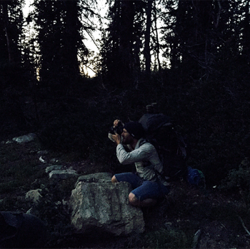

Photography
Q: What camera do you use?
A: Canon 5D Mark iii
Q: What is your favorite subject?
A: I love shooting landscapes, especially in the morning as the sun is rising.
The colors are so vivid and beautiful in the morning, which not a lot of people witness it.
Q: What photographer inspires you?
I would say my Grandpa. Even though he passed away in 1995 and was never a
professional photographer, the pictures I’ve seen he has taken are amazing. I love the colors
and the angles he would take.
Q: What was your career path? Was photography all what you aspired to do?
A: I always loved taking pictures, especially to help me remember certain
events. It wasn’t until I started college that I really started getting into it and realized
I enjoy it, why not try to make money from it. When I started taking pictures professionally,
I never wanted to make it a burden and not enjoyable. I wanted to push myself but at the same
time love to do it. That's the goal that I have while starting North Forty Photography. I want
to share my talents with other for them to enjoy them as well.

Q: What do you want to say with your photography and how do you get your photos to do that?
A: I am always exploring the outdoors. Going places where people don’t usually
go and experience. I’ve seen sunrises and sunsets from beaches, on top of mountain tops, in the
city and am always in awe of what God has created. I remember the first sunset I took and showed
my family and friends. They loved it. It was something different, something they haven’t seen
before and thats what I want my work to show. Something that is different and can show the beautiful
place that God created.